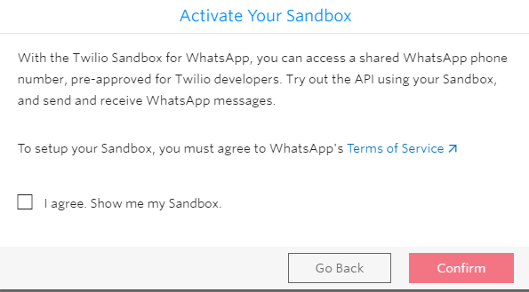

Chatbots using Whatsapp: How to set up Twilio
Here you can learn how to setup Twilio in order to use Whatsapp as a messaging platform for the Chatbot generator. Twilio Sandbox for WhatsApp allows you to prototype with WhatsApp immediately, without waiting for your Twilio number to be approved for WhatsApp. Summary Creating the accountFirst, create a new account in Twilio. You'll be asked to verify your email: Then, you'll be asked to verify your phone number: Joining the sandboxYou'll have to go through some steps: Here you can skip to dashboard: Then go through "All Product & Services" and select "Programmable Messaging". In a new window that appears, you have to select "WhatsApp" and it asks you if you want to activate the Sandbox. To activate the sandbox, a page like this one appears:  Select a number from the available sandbox numbers:
There's a learn tutorial which you can follow easily. The sandbox is pre-provisioned with a Twilio phone number. After joining, you will receive a message from the sandbox: See here for more details. Configuring inbound message webhooksWhen customers send you a WhatsApp message, Twilio sends a web hook to your application. On the sandbox page you have to configure the URL that Twilio sends a web hook to for inbound messages. The Chatbot generator creates a webhook (see Howto: Chatbots using WhatsApp), under the instance's module. After building it, configure the URL as follows: http://<server>/<baseURL>/<InstanceModule>.WhatsappWebhook.aspx (.NET) or http://<server>/<baseURL>/<InstanceModule>.WhatsappWebhook (Java) This has to be configured going through "Programmable Messaging -> Settings -> Whatsapp sandbox settings". Note that the machine where the webhook is hosted, has to be visible from Internet: Configuration SettingsIn the console page, you have the Account SID and an Authorization Token. These credentials are needed to the interaction with Twilio Account SID - Used to identify yourself in API requests The Auth Token is the information needed when you send messages through Twilio. This is the information to be configured in the WebHook.
Note: If you have joined your Sandbox > 24 hours ago, you will need to send a fresh inbound message to your WhatsApp number in order to then send yourself a media message. Otherwise, you'll get the "ERROR - 63016
|

| Backlinks | |
| Toc:Chatbots in GeneXus | Howto: Chatbots using WhatsApp |
| Howto: Integrate a new WhatsApp partner into a GeneXus Chatbot | Multi-experience with GeneXus 17 |
| WhatsApp Partner property |